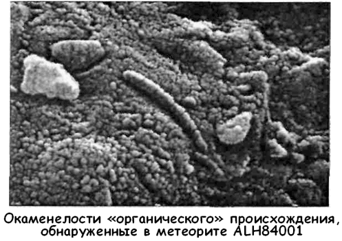
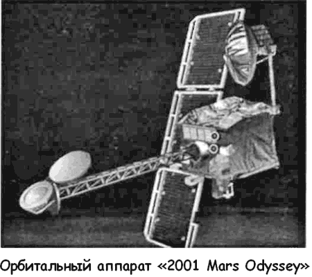
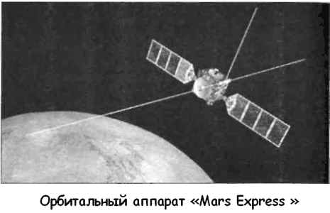

Новый проект марсианской экспедиции НАСА
«НАСА сделало поразительное открытие, указывающее на возможность того, что более трех миллиардов лет назад на Марсе могла существовать примитивная форма микроскопической жизни».
В таких тщательно подобранных словах 7 августа 1996 года на пресс-конференции в Космическом центре имени Джонсона в Хьюстоне было сделано первое публичное сообщение о том, что было найдено в метеорите ALH84001.
Метеорит ALH84001 состоит из скальной породы, достоверный возраст которой составляет более 4,5 миллиарда лет.
Есть данные, позволяющие предполагать, что эта порода была «выплеснута» с поверхности Марса 15 миллионов лет назад в результате столкновения с кометой или астероидом. Затем она путешествовала по космическому пространству, пока не пересекла путь Земли всего лишь 13 тысяч лет назад и не упала среди материкового льда Антарктиды. В карбонатной части метеорита ученые НАСА обнаружили вытянутые яйцевидные структуры длиной в несколько десятков нанометров.
Именно их они называют «окаменелыми остатками марсианских сверхмикроскопических организмов. Однако их объем в тысячу раз меньше самых мелких земных бактерий.

На основании этого оппоненты утверждают, что «ископаемые останки» лишь напоминают окаменевшие микроорганизмы, являясь продуктом естественных геологических процессов. Так, исследователи из Гавайского университета говорят, что предполагаемые «формы жизни» имеют минеральную природу и, вероятно, образовались в горячей, находящейся под высоким давлением жидкости, которая была как бы впрыснута в разломы.
Так или иначе, но открытие ученых НАСА оказалось весьма своевременным. Аэрокосмическое агентство США затеяло новую программу исследования красной планеты, которая нуждается в развитии, подкрепляемом серьезным финансированием.
Надежда на то, что на каком-то из этапов реализации этой программы удастся обнаружить на Марсе жизнь, подстегивает к новым свершениям не только исследователей, но и политиков.
В планах НАСА — значительное расширение присутствия роботов на красной планете. До самого последнего времени главной задачей марсианской миссии считалось обеспечение пилотируемой экспедиции. Ее проект был подготовлен еще в 1989 году по распоряжению президента Джорджа Буша-старшего и в качестве подготовительного этапа включал развертывание мощной сети автоматических устройств.
Первый шаг в соответствующем направлении был сделан 25 сентября 1992 года, когда к Марсу отправилась автоматическая орбитальная станция нового поколения «Марс Обсервер» («Mars Observer»). Ей предстояло произвести новую съемку поверхности Марса, по сути дублируя работу орбитальных аппаратов «Викинг», но на гораздо более высоком уровне разрешения. На станции была установлена камера, которая могла делать снимки с разрешающей способностью 1,4 метра на пиксель (против 50 метров на пиксель у «Викингов»).
Однако «Обсервер» потерпел неудачу прежде, чем успел выйти на околомарсианскую орбиту. Пресс-релиз НАСА так описывает случившееся: «Вечером в субботу 21 августа 1993 года была потеряна связь с космическим кораблем «Марс-Обсервер», когда он находился в трех днях полета от Марса. Инженеры и руководители полета из Лаборатории реактивного движения НАСА в Пасадене, штат Калифорния, задействовали резервные каналы, чтобы включить передатчик космического корабля и сориентировать его антенны на Землю. Начиная с 11 часов утра восточного поясного времени воскресенья 22 августа станции слежения, расположенные по всему земному шару, не получали ни одного сигнала с космического корабля».
Убедительного объяснения произошедшему нет до сих пор. Одна из гипотез — аппарат потерял ориентацию из-за разгерметизации топливного бака.
Несмотря на эту потерю, НАСА продолжило программу, запустив в ноябре и декабре 1996 года сразу две автоматические станции.
Первая из них — «Марс Глобал Сервейор» («Mars Global Surveyor») — должна была заменить утерянный «Обсервер».
На ее борту находилось оборудование только для пяти экспериментов вместо изначальных семи, но все же она имела отличную цифровую камеру «Mars Orbital Camera» конструкции Майкла Малина, что позволило делать прекрасные снимки марсианской поверхности.
Вторая станция — «Марс Патфайндер» («Mars Pathfinder», «Carl Sagan Memorial Station») — несла на себе шестиколесный марсоход «Соджорнер» («Sojourner»). 4 июля 1997 года спускаемый аппарат «Патфайндера» вошел в атмосферу Марса.
Сначала скорость аппарата была снижена за счет парашютной системы, на заключительной стадии спуска под днищем «Патфайндера» были надуты 24 воздушных шара, обеспечившие мягкую посадку. Уже на следующий день марсоход «Соджорнер» сел на поверхность Марса. За месяц работы посадочная станция и марсоход передали на Землю большое количество высококачественных фотоснимков и обследовали некоторые из камней, обнаруженных в месте посадки. Экспедиция «Патфайндера» обошлась бюджету НАСА всего лишь в 265 миллионов долларов, что очень дешево. Это позволило говорить о возможности засылки на Марс целого выводка «Соджорнеров», которые позволят непосредственно и достаточно подробно изучить красную планету. 11 декабря 1998 года в развитие программы «Марс Сервейор» к Марсу отправился еще один орбитальный аппарат — «Марс Климат Орбитер» («Mars Climate Or biter»), задачей которого было изучать погодные изменения, распределение воды в атмосфере и на поверхности, а также поддерживать связь с полярным посадочным аппаратом «Марс Полар Ландер» («Mars Polar Lander»). 23 сентября 1999 года «Марс Климат Орбитер» слишком глубоко вошел в атмосферу Марса и сгорел. Позднее была установлена причина гибели аппарата — автор программы управления спутал фунты с ньютонами. Эта ошибка обошлась НАСА потерей космической системы стоимостью в пару сотен миллионов долларов.
Однако еще более серьезный удар по марсианской программе нанесла гибель полярного посадочного аппарата.
«Марс Полар Ландер», созданный для изучения ледяного покрова южного полюса Марса, стартовал к красной планете 3 января 1999 года, а уже 3 декабря того же года связь с аппаратом была утеряна — по-видимому, он разбился при посадке.
Две катастрофы подряд заставили американский Конгресс пересмотреть бюджет НАСА, а руководство Аэрокосмического агентства — кадровую политику своего ведомства, поскольку причины гибели двух станций увязывались в средствах массовой информации именно с «человеческим фактором».
В результате пришлось поумерить аппетиты и сократить обширные планы на астрономическое окно 2001 года. В этот период планировалось запустить к Марсу орбитальный аппарат «Марс Сервейор 2001 Орбитер» («Mars Surveyor 2001 Orbiter»), посадочный аппарат «Mars Surveyor 2001 Lander» и на его борту — марсоход «Marie Curie». 7 апреля 2001 года в обеспечение американской миссии на Марсе стартовал только один аппарат из трех — модифицированный «Марс Сервейор 2001 Орбитер», получивший имя «2001 Марс Одиссей» («2001 Mars Odyssey») в честь известного научно-фантастического романа Артура Кларка, экранизированного культовым режиссером Стэнли Кубриком.
С января 2002 по июль 2004 года «Одиссей» будет изучать Марс. С его помощью планируется проанализировать распределение минералов и химических элементов на поверхности планеты, а одним из главных пунктов поиска будет вода, которая, как мы знаем, является основой всего живого.
Также будет исследоваться интенсивность радиоактивного космического излучения вокруг планеты — это важно для оценки риска будущих пилотируемых экспедиций.
Параллельно с выполнением своей научной программы станция «2001 Марс Одиссей» станет ретранслировать данные с американских марсоходов «МЕР-А» («MER-A») и «МЕР-Б» («MER-B») (посадка — 4 января и 25 февраля 2004 года соответственно) и посадочных аппаратов других стран. Станция также будет использоваться в качестве ретранслятора после завершения собственной программы — до 17 сентября 2005 года.

Дальнейшие планы США по освоению красной планеты таковы.
В начале лета 2003 года к Марсу должны отправиться две станции с марсоходами серии «МЕР» («MER», «2003 Mars Exploration Rovers»). Главной особенностью новых марсоходов является их мобильность и способность преодолевать большие расстояния. «МЕР» может проходить до 100 метров в день, изучая по дороге образцы грунта. Главной задачей марсоходов будет поиск воды. Вес аппаратов — 150 килограммов, гарантийное время работы — не менее 90 марсианских дней.
Помимо марсоходов в июне 2003 года на межпланетную траекторию запустят аппарат «Марс Экспресс» («Mars Express»), создаваемый НАСА совместно с Европейским космическим агентством ЕСA (ESA) и Итальянским космическим агентством. На этой станции будут размещены приборы, дублирующие тот комплект аппаратуры, который погиб вместе с «Марсом-96». Кроме того, «Марс Экспресс» понесет на себе посадочный зонд «Бигл-2» («Beagle 2»).

Задачей орбитального аппарата «Марс Экспресс» будет изучение полярных и приполярных областей, атмосферы и геологии Марса. «Бигл-2», снабженный оборудованием для биохимического анализа, будет высажен на поверхность в районе Изидис Планитиа и попытается выявить в марсианском грунте микроорганизмы.
На астрономическое окно 2005 года запланирован запуск следующего орбитального средства «2005 Mars Reconnaissance Orbiter». Этот аппарат будет снабжен цифровой камерой с разрешающей способностью от 20 до 30 сантиметров на пиксель, что позволит снимать объекты размером с футбольный мяч. С ее помощью ученые НАСА собираются переснять заново особенно интересные районы, отобранные из коллекции «Марс Глобал Сервейор».
На окно 2007 года также имеются свои виды, однако говорить о конкретных программах для этой даты пока рановато.
Тем не менее уже летом 2001 года НАСА объявило о десяти наиболее перспективных проектах исследования Марса, которые были отобраны среди множества предложенных вариантов.
Команды разработчиков получили финансирование в размере 150 тысяч долларов на проведение шестимесячных исследований.
Каждый из проектов заслуживает отдельного разговора, но здесь я дам им лишь краткую характеристику.
Проект «СКИМ» («SCIM», «Sample Collection for Investigation of Mars» — «Сбор Образцов для Исследования Марса») ставит своей целью сбор атмосферной пыли и газа с помощью аэрогеля с последующей доставкой на Землю по «траектории свободного возвращения».
Проект «Китти-Хок» («Kitty-Hawk») предусматривает использование трех планеров для изучения состава и стратиграфии (последовательности формирования горных пород) стен долины Маринеров в местах, недоступных для спутников и наземных аппаратов.
Проект «Юрэй» («Urey») — высадка наземного вездехода, позволяющего определить абсолютный возраст геологических материалов на любой планете.
Проект «МАКО» («МАСО», «Mars Atmospheric Constellation Observatory» — «Марсианская Атмосферная Звездная Обсерватория») — запуск сети микроспутников, предназначенных для создания трехмерной карты атмосферы планеты, что позволит в дальнейшем по-новому взглянуть на местный климат.
Проект «Артемида» («Artemis») — в этой миссии три микровездехода будут изучать поверхность «красной планеты», ее климат и органические материалы (если таковые обнаружатся).
Причем два аппарата из трех предназначены специально для исследования полярных регионов планеты.
Проект «МЕО» («Mars Environmental Observer» — «Исследователь Окружающей Среды Марса») — запуск научного спутника, который будет изучать количественный состав и роль воды, пыли, льда и других материалов в атмосфере планеты для того, чтобы определить основные этапы гидрологического цикла.
Проект «Паскаль» («Pascal») — создание сети из 24 метеорологических станций на поверхности Марса обеспечит более двух лет непрерывного мониторинга влажности, температуры, давления и других параметров.
Проект «МСР» («MSR», «Mars Scout Radar», «Марсианский Разведывательный Радар») — спутник при помощи радара с синтезированной апертурой позволит создать геоморфологическую карту поверхности и подповерхностного слоя глубиной до трех метров, для поиска скрытых источников воды и других подобных исследований.
Проект «Наяды» («The Naiades») — в этой миссии четыре посадочных модуля будут искать жидкую воду в нижнем горизонте почвы с помощью низкочастотного эхолокатора.
Проект «Крио-Разведчик» («CryoScout») — в ходе миссии планируется, расплавляя лед марсианских ледяных шапок, достигнуть глубин от 10 до 100 метров, по ходу движения исследуя состав воды и входящих в нее органических компонентов (если таковые будут найдены).
Помимо вышеописанных существуют также совместные проекты НАСА с европейскими комическими агентствами.
Так, в октябре 2011 года к Марсу должна уйти станция «Mars CNES MSR 2011», создаваемая французами. Ее главной задачей станет доставка образцов марсианского грунта на Землю.
Все эти экспедиции, объединенные в единую программу с едиными стандартами связи и обработки информации, должны служить одной и самой важной цели — подготовке и материальному обеспечению пилотируемого полета к Марсу.
Еще несколько лет назад никто в НАСА не сомневался в необходимости такого полета. Схема пилотируемой экспедиции, согласно проекту НАСА, выглядит так.
Сначала на красную планету должны отправиться три грузовых корабля. Первый из них стартует в 2009 году и «перетащит» на орбиту Марса полностью заправленный космический корабль, на котором астронавтам предстоит вернуться на Землю. Второй обеспечит доставку уже непосредственно на марсианскую поверхность незаправленной ракетной капсулы, на которой экспедиция стартует к находящемуся на орбите космическому кораблю возвращения. Наконец, третий корабль доставит на планету модули жилых помещений, лабораторий, блок ядерного источника электроэнергии.
Лишь после этого стартует четвертый корабль, который и доставит шесть астронавтов непосредственно на Марс, где они проведут около 20 дней, занимаясь научными исследованиями.
Стоимость проекта, предусматривающего полеты трех экипажей к Марсу в течение 12 лет, оценивается всего лишь в 50 миллиардов долларов. Первый экипаж планировалось высадить на поверхность Марса 4 июля 2012 года.
После гибели аппаратов «Марс Климат Орбитер» и «Марс Полар Ландер» сроки пришлось пересмотреть. Отправка первого «грузовика» была перенесена на 20 ноября 2011 года, а старт первой экспедиции — на 1 декабря 2025 года.
К сожалению, чем дальше, тем меньше интереса в обществе вызывает сама идея пилотируемой экспедиции на Марс.
Все громче раздаются голоса о том, что нет смысла посылать людей туда, где прекрасно справляются автоматы. НАСА также переживает не лучшие времена, и в свежем стратегическом плане этой организации, опубликованном в конце декабря 2001 года, никаких упоминаний о пилотируемой экспедиции нет. Следовательно, на какое-то время этот проект будет отложен в долгий ящик. Хочется надеяться, что не навсегда…